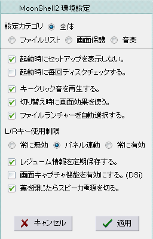
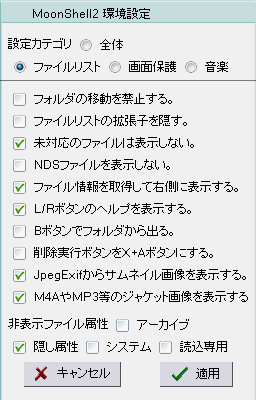
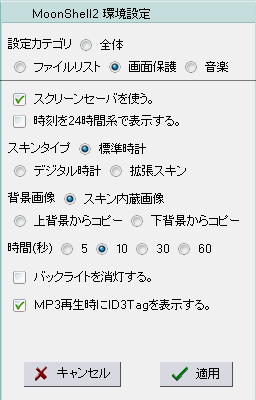
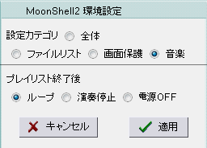
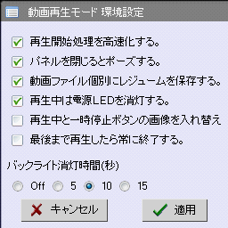
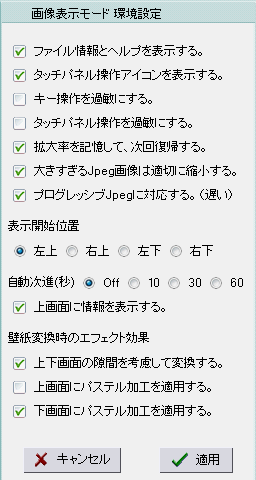
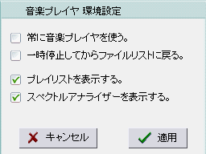
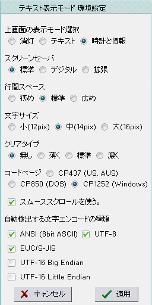

・起動時にセットアップを表示しない。
・起動時に毎回ディスクチェックする。
特に理由がないときはチェックをはずさないでください。
安全のため、常に検査することを推奨しています。
・キークリック音を再生する。
・切り替え時に画面効果を使う。
・ファイルランチャーを自動選択する。
HomeBrewアプリを実行した後であれば、ファイルランチャーから起動します。
・L/Rキー使用制限
常に無効, パネル連動, 常に有効
・レジューム情報を定期保存する。
音楽と画像とテキストは、最後の状態を保持します。
・画面キャプチャ機能を有効にする。(DSi)
DSiではSELECTボタンは明度変更です。画面キャプチャするときはこれをチェックしてください。
・蓋を閉じたらスピーカ電源を切る。
イヤフォン出力は常に有効なので、バッグの中などで誤ってケーブルを抜いても音が漏れなくなります。

・フォルダの移動を禁止する。
・ファイルリストの拡張子を隠す。
・未対応のファイルは表示しない。
AVIやEXEなどのファイルを表示しなくします。
WMAやJPGなどの対応フォーマットであっても（ファイルリストに表示されているとしても）開けない内部フォーマットがあります。
・NDSファイルを表示しない。
・ファイル情報を取得して右側に表示する。
ファイル情報が表示されるのは、MP3,JPG,BMP,PSD,DPG のみです。
・L/Rボタンのヘルプを表示する。
L/Rボタンを長く押したときにオンラインヘルプを表示します。
・Bボタンでフォルダから出る。
通常は、音楽を停止します。
このチェックを有効にすると、Rボタントリプルクリックが音楽停止になります。
・削除実行ボタンをX+Aボタンにする。
STARTボタンでファイル削除ダイアログを表示したときの実行キーです。通常はL+R+Aボタンです。
・JpegExifからサムネイル画像を表示する。
・M4AやMP3等のジャケット画像を表示する。
・非表示ファイル属性
アーカイブ, 隠し属性, システム, 読込専用

・スクリーンセーバを使う。
・時刻を24時間系で表示する。
・スキンタイプ
標準時計, デジタル時計, 拡張スキン
・背景画像
スキン内蔵画像, 上背景からコピー, 下背景からコピー
・時間(秒)
5, 10, 30, 60
・バックライトを消灯する。
・MP3再生時にID3Tagを表示する。

・プレイリスト終了後
ループ, 演奏停止, 電源OFF

・再生開始処理を高速化する。
これをチェックすると軽快に開始できますが、重い動画ファイルではコマ落ちするかもしれません。
・パネルを閉じるとポーズする。
・動画ファイル個別にレジュームを保存する。
・再生中は電源LEDを消灯する。
・再生中と一時停止ボタンの画像を入れ替える。
見た目（スキン）だけが入れ替わります。機能は変わりません。
・最後まで再生したら常に終了する。
プレイモード（順再生、ループ再生など）に関わらず常にファイルリストに戻ります。
・バックライト消灯時間(秒)
Off, 5, 10, 15

・ファイル情報とヘルプを表示する。
・タッチパネル操作アイコンを表示する。
・キー操作を過敏にする。
・タッチパネル操作を過敏にする。
・拡大率を記憶して、次回復帰する。
・大きすぎるJpeg画像は適切に縮小する。
・プログレッシブJpegに対応する。（遅い）
ProgressiveJpegファイルのデコードは非常に遅く、途中でキャンセルもできません。
・表示開始位置
左上, 右上, 左下, 右下
・自動次進(秒)
Off, 10, 30, 60
・上画面に情報を表示する。
・壁紙変換時のエフェクト効果
画像を表示しながらSTARTボタンを押したときの変換フィルタ設定です。
・上下画面の隙間を考慮して変換する。
・上画面にパステル加工を適用する。
・下画面にパステル加工を適用する。

・常に音楽プレイヤを使う。
ファイルリストでAボタンを押したときに、同時再生ではなく、音楽プレイヤを起動するようになります。
・一時停止してからファイルリストに戻る。
・プレイリストを表示する。
・スペクトルアナライザーを表示する。
重いフォーマット（MIDIやWMAなど）を再生しながらFFT計算を行うと音飛びするかもしれません。

・上画面の表示モード選択
消灯, テキスト, 時計と情報
・スクリーンセーバ
標準, デジタル, 拡張
・行間スペース
狭め, 標準, 広め
・文字サイズ
小(12pix), 中(14pix), 大(16pix)
・クリアタイプ
無し, 薄く, 標準, 濃く
旧DSとDSLiteの中間辺りで製造されたNDSでは正しく表示されないかもしれません。
また、DSiでは未確認です。
ピクセルフォーマットの整合性が正しくないと、ぼやけた文字になります。
・コードページ
CP437 (US, AUS), CP850 (DOS), CP1252 (Windows)
これはANSIフォーマットだけで使用されるオプションです。
・スムーススクロールを使う。
・自動検出する文字エンコードの種類
読込みたいテキストフォーマットだけを選択してください。